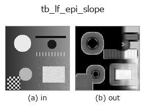

typed op• Data kinds: lightfield → image
• Call: fullseye.apply(img, "tb_lf_epi_slope", a=0.5, b=0.5) (2-D model = एक image + दो scalar knobs a,b∈[0,1])

*Figure synthetic 128×128 input पर सच में चलाकर मिला output है। बाईं ओर input, दाईं ओर output। Point clouds ऊपर से देखे गए scatter के रूप में (brightness = z), 1-D series line के रूप में, volumes z दिशा में maximum-intensity projection के रूप में, videos बीच के frame के रूप में, complex images amplitude के रूप में, और जो return values चित्र नहीं बन सकते वे स्वयं values के रूप में दिखाए जाते हैं।*
*Knob a output नहीं बदलता (मापा गया: 0.1 / 0.5 / 0.9 पर एक जैसा)।*
*Knob b output नहीं बदलता (मापा गया: 0.1 / 0.5 / 0.9 पर एक जैसा)।*
Stages (पहले आने वाले ops → यह op, बाएँ से क्रम में):
▸ tb_lf_epi_slope: stages का figure (docs site)
दूसरी images पर भी (synthetic scene / photo / coins। ऊपर की row में inputs, नीचे की row में उनके outputs। Knobs default पर):
▸ tb_lf_epi_slope: दूसरी images पर output (docs site)
EPI line orientation से हर pixel का slope (structure tensor, एक pass)।
> नीचे का विस्तृत विवरण मूल text में है — सारांश और headings का अनुवाद हो चुका है।
A scene point traces a straight line in the epipolar-plane image (lf_epi), so along that line the intensity is constant:
E_u + s * E_x = 0. Accumulating that constraint over the whole angular grid and a window x window spatial neighbourhood gives the closed-form least-squares slope s = -(J_ux + J_vy) / (J_xx + J_yy) with J_ab = sum(E_a * E_b) — one pass over the light field, no sweep, both the horizontal and vertical EPI directions pooled.
This estimator is biased, and the bias is the reason to also run lf_depth_from_focus. It is ordinary (not total) least squares on finite differences, so it needs the EPI line to advance less than roughly one texture correlation length per view. Measured 2026-09-01 on 5x5x64x64 synthetic fields, median over the interior: with texture sigma = 1.5 px, true +1.00 -> +1.0004, +0.50 -> +0.5285, +1.50 -> +1.3018, +2.00 -> +1.4614; with sigma = 5.0 px the same slopes give +1.0003, +0.5029, +1.4827, +1.9482. Integer slopes on a wrapped field come back within 4e-4 and s = 0 is exact; |s| > 1 is under-estimated, by 27% at s = 2 on the roughest texture. Use it as a fast dense initialiser, not as the final word.
Returns (slope_map, energy): the (H, W) slope map and the (H, W) gradient energy J_xx + J_yy that was the denominator. Pixels whose energy is below *min_energy* have no measurable parallax (a flat patch of sky); their slope is set to 0 and their energy reported as-is, so you threshold on energy instead of being handed a plausible-looking number divided by ~0.
Raises ValueError: *lf* not a valid light field, an angular/spatial shape where *neither* EPI direction carries information (the horizontal EPI needs U >= 2 and W >= 2, the vertical needs V >= 2 and H >= 2), an even or non-positive *window*, a non-positive *min_energy*.
Typed bridge of the lightfield op lf_epi_slope into the 2-D evolution registry: the same implementation, called under the op(v, a, b) convention. This op has no tunable parameter; a and b are unused.
• Sample data catalog (DL URL / license) — 2-D के लिए skimage.data (BSD/public) + synthetic, 3-D के लिए real data sources (Stanford/PDS आदि) के DL URL।
• Operators का स्रोत और संदर्भ — इस op family के मूल research/methods के स्रोत।
नीचे का program सच में चलता है, यह जाँचा गया है (figure वाला ही input)। Studio की help में यह block buttons बन जाता है, जिनसे इसे वहीं load करके चलाया जा सकता है।
img_to_lightfield 0.50 0.50 tb_lf_epi_slope 0.50 0.50
▸ यह pipeline load करें · Load करके चलाएँ
नीचे के उदाहरण मूल ledger op lf_epi_slope को call करते हैं। यह bridge op वही implementation है, बस fn(v, a, b) convention के अनुसार ढाला गया है, इसलिए व्यवहार वैसा ही लागू होता है (केवल call का रूप अलग है)।
• lightfield_depth — py -3.11 examples/lightfield_depth.py
• poc_lightfield_depth — py -3.11 examples/poc_lightfield_depth.py
image को input के रूप में लेते हैं)identity · gaussian · mean_box · bilateral · unsharp · median · min_filter · max_filter
typed)tb_points_to_voxel · tb_estimate_point_normals · tb_iss_keypoints · tb_project_points · tb_render_point_depth · tb_statistical_outlier_removal · tb_radius_outlier_removal · tb_voxel_grid_downsample
*Provenance: ops.py — 2D operator registry. यह per-op note tools/opdocs.py md से अपने-आप generate होता है (हाथ से edit न करें)।*
© 2026 Kazufumi Furuse — Fullseye operator documentation. Licensed under Apache-2.0.